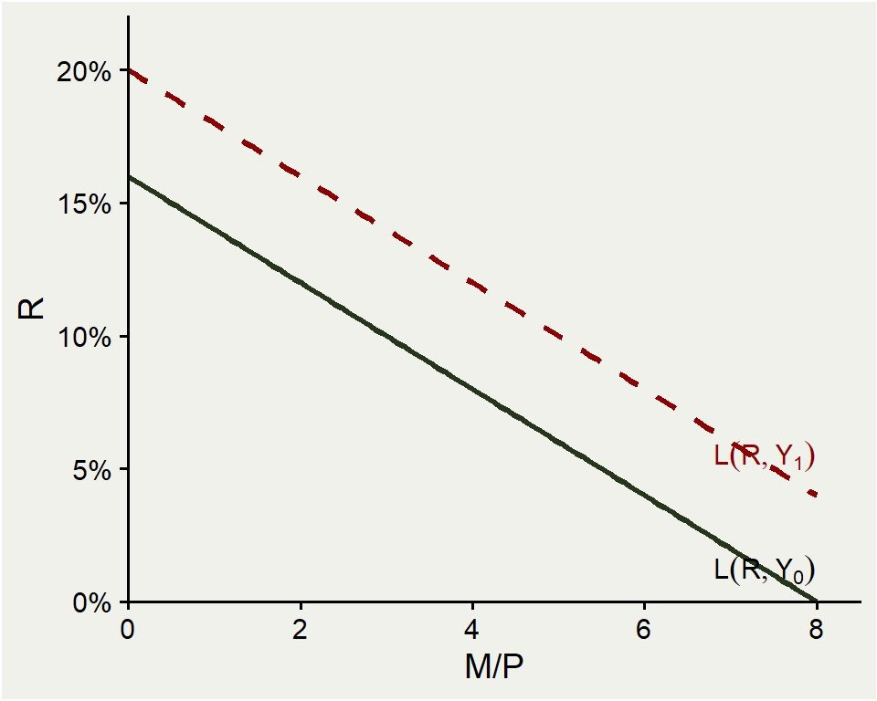
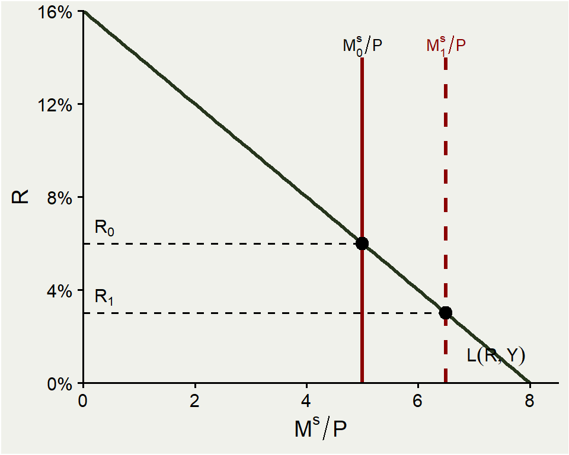
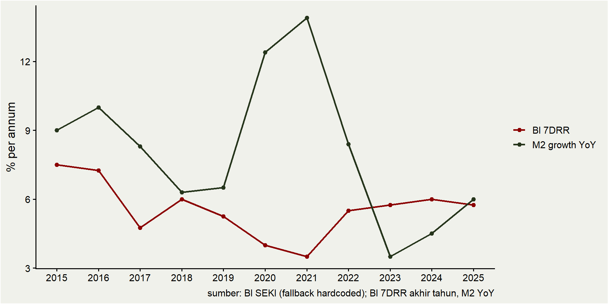
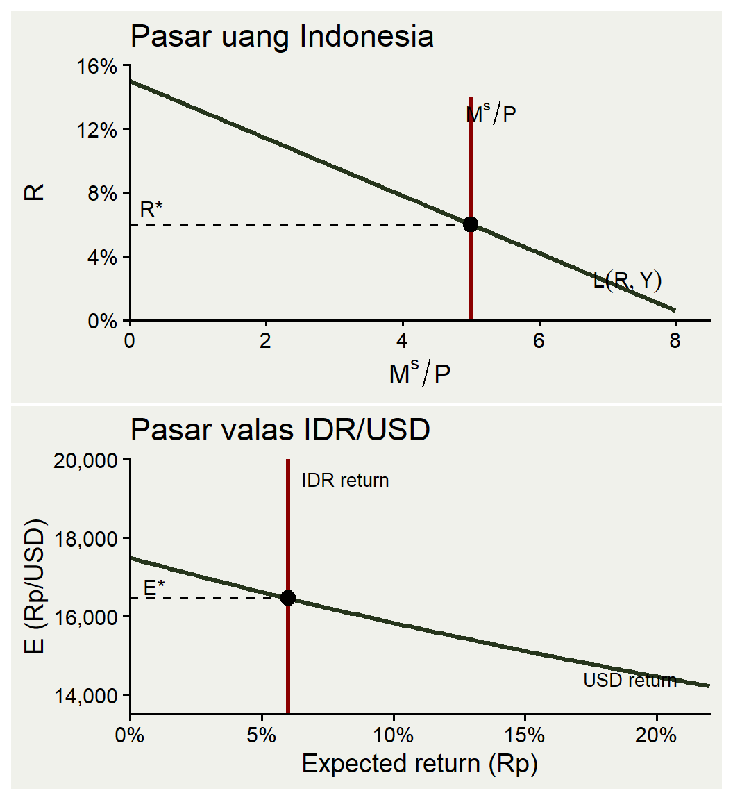
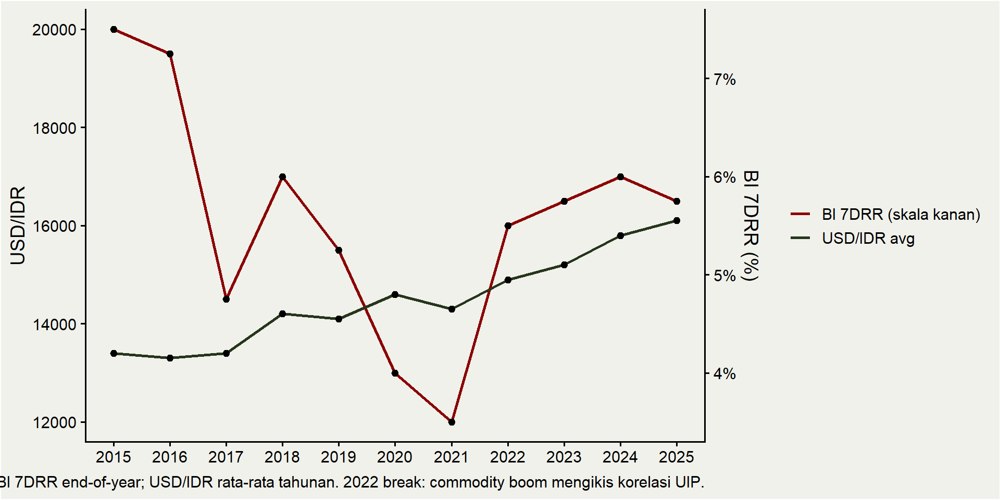
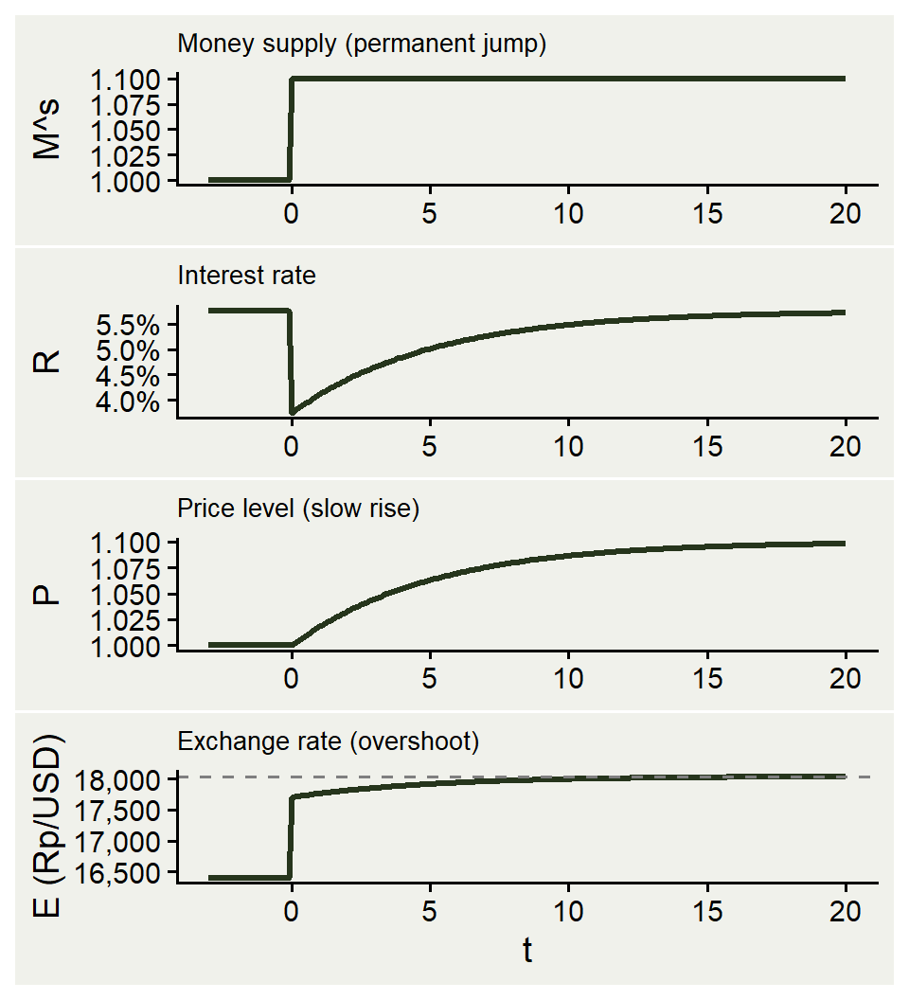
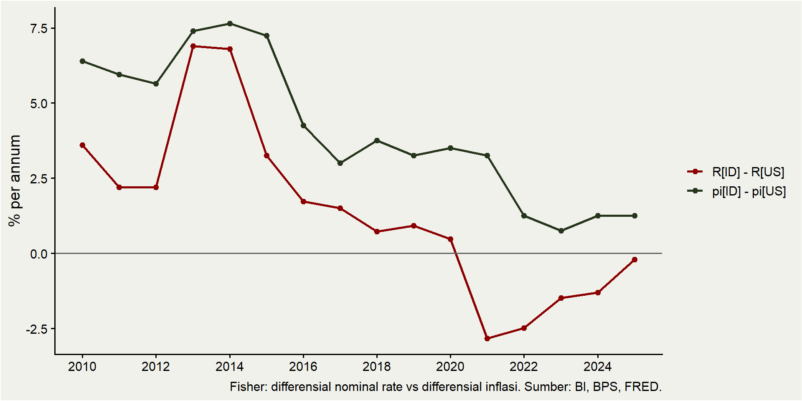
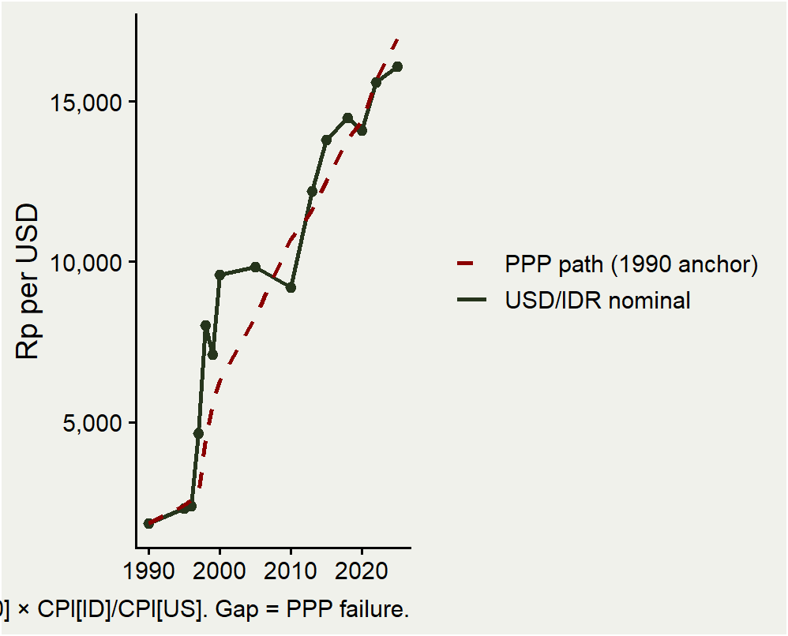
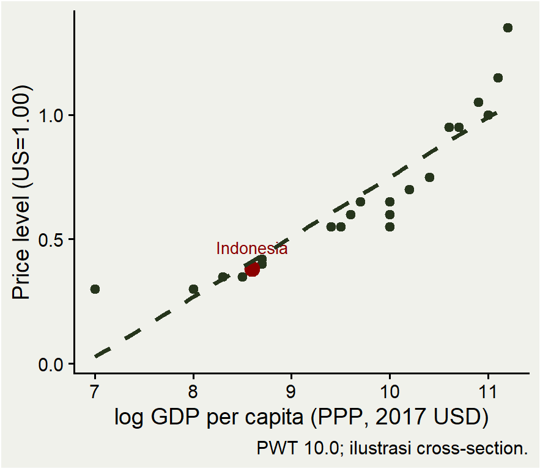
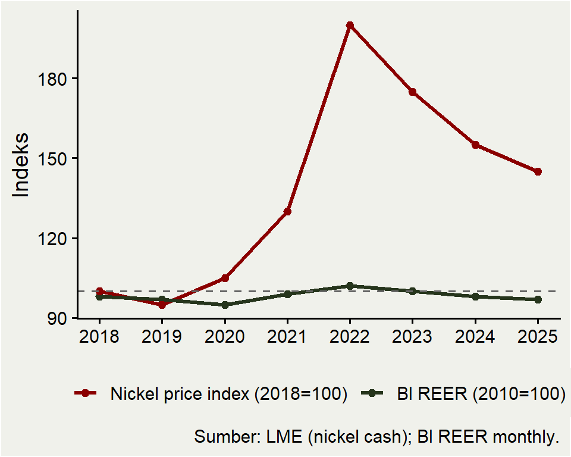

ECES905205 pertemuan 12
Invalid Date
Kemarin: Basic exchange rate, UIP dan CIP.
Hari ini: demand for money and exchange rate in the long run.
\[ \frac{M^d}{P} = L(R, Y) \]
di mana \(M^d\) = demand uang nominal, \(P\) = level harga (IHK BPS), \(R\) = nominal interest rate (BI 7DRR atau JIBOR), \(Y\) = pendapatan nasional riil (PDB riil).
\(L(R, Y)\) menurun di \(R\) (opportunity cost pegang cash) dan menaik di \(Y\) (volume transaksi).
Memorize: “real money demand depends negatively on \(R\) and positively on \(Y\)”.
Untuk Indonesia: jika BI 7DRR turun, orang lebih banyak pegang giro/saldo; jika PDB tumbuh, transaksi naik → kebutuhan likuiditas naik.
Horizontal: \(M/P\) (real money balance).
Vertical: \(R\).
Kurva \(L(R, Y_0)\) menurun: makin tinggi \(R\), makin kecil \(L\).
Posisi kurva tergantung \(Y\) (selanjutnya).

Kenaikan pendapatan nasional riil dari \(Y_0\) ke \(Y_1\) menggeser seluruh kurva ke kanan/atas.
Pada setiap level \(R\), orang menginginkan lebih banyak saldo riil — karena transaksi lebih banyak.
Kebijakan implikasi: pertumbuhan ekonomi yang sehat butuh ekspansi monetary supply proporsional — jika tidak, \(R\) akan naik dan crowd out investasi.
\[ \frac{M^s}{P} = L(R, Y) \]
\(M^s\) ditentukan BI (lewat OMO/reverse repo); \(P\) dan \(Y\) ditentukan di pasar barang.
Persamaan ini punya satu unknown: \(R\).
Mekanisme: jika excess supply uang → orang pegang terlalu banyak cash → beli SBN/obligasi → harga obligasi naik → yield (\(R\)) turun.
Sebaliknya jika excess demand uang → jual SBN → harga turun → yield naik.
KOM Fig 15.4: BI ekspansi via reverse repo → \(M^s\) naik.
Kurva \(M^s/P\) vertikal geser ke kanan.
Pada \(R\) awal, sekarang ada excess supply uang.
Equilibrium baru di \(R\) lebih rendah.
Numerik: jika \(M^s\) naik 5% dengan elasticity \(L_R \approx -10\), \(R\) turun dari 5,75% ke ~5,25%.

KOM Fig 15.5: jika \(Y\) naik dengan \(M^s\) tetap, kurva \(L(R, Y)\) geser ke kanan.
Pada \(R\) awal, excess demand uang → jual SBN → yield naik → \(R\) baru lebih tinggi.
Implikasi penting: pertumbuhan ekonomi otomatis menaikkan \(R\) kalau BI tidak menyesuaikan \(M^s\).
Ini kenapa central bank di EM (termasuk BI) cenderung accommodating: kalau \(Y\) naik, \(M^s\) ditambah agar \(R\) tidak naik tajam.

\[ R = R^* + \frac{E^e - E}{E} \]
Jadi rantainya: BI set \(M^s\) → money market clear → \(R\) terbentuk → UIP menentukan \(E\).
Untuk Indonesia, \(R\) = BI 7DRR (~5,75%), \(R^*\) = Fed Funds (~4,5%), \(E^e\) = ekspektasi nilai tukar masa depan, \(E\) = USD/IDR spot.
Kalau money market di luar negeri (US) juga bergerak, \(R^*\) ikut bergerak, dan rantai kebalikan terjadi pula.
Money market (atas):
\(M^s/P\) vertikal, \(L(R, Y)\) menurun, Equilibrium \(R^*_{\text{ID}}\) di perpotongan.
FX market (bawah):
Kunci: \(R^*_{\text{ID}}\) dari money market menjadi anchor garis vertikal di FX.

BI naikkan \(M^s\) (beli SBN via OMO ekspansif).
Money market: \(M^s/P\) geser kanan → \(R\) turun dari 5,75% ke (misal) 5,25%.
FX market: garis vertikal IDR return geser kiri → \(E\) baru di perpotongan dengan USD return → \(E\) naik.
Hasil: IDR depresiasi.
Intuisi: bunga rupiah turun → investor cari yield USD → demand USD naik → IDR melemah.
Fed naikkan \(M^s_{US}\) → \(R^*\) (Fed Funds) turun.
Pasar uang Indonesia: tidak bergerak — \(M^s_{ID}\), \(P_{ID}\), \(Y_{ID}\) tetap → \(R\) tetap.
FX market: USD return curve geser kiri (return USD lebih rendah pada setiap \(E\)).
Equilibrium baru \(E\) lebih rendah → IDR apresiasi.
Simetris: dovish Fed = tailwind untuk EM currencies, termasuk IDR.
Perubahan \(M^s_{ID}\) → bergerak di kedua market.
Perubahan \(M^s_{US}\) → hanya bergerak di FX market, money market Indonesia tidak bergeser.
KOM Fig 15.9: shift ke USD return kiri, money market US tidak ada di gambar (tapi \(R^*\) turun yang menyebabkan shift itu).
Implikasi: efek kebijakan moneter US ke Indonesia murni via FX channel, bukan via domestic credit.
Bandingkan dengan trade channel (Ch.17 nanti) yang lebih lambat.

Dalam jangka panjang, \(P\) menyesuaikan penuh.
\(Y\) kembali ke potential output (ditentukan supply riil: tenaga kerja, kapital, teknologi).
\(R\) riil kembali ke level natural (savings vs investment).
Yang berubah dalam long-run: \(P\) dan \(E\) secara nominal.
Money neutrality: \(M\uparrow\) proporsional → \(P\uparrow\) proporsional → \(E\uparrow\) proporsional. Real variables tidak terpengaruh.
rata-rata negara Latin Amerika 1987-2014 → korelasi tinggi antara money growth dan inflasi.
Untuk Indonesia long-run: hyperinflation 1965-66 (sudah dibahas M11) adalah kasus paling ekstrem.
Periode stabil 2000-2025: M2 growth ≈ 8-12%/tahun, inflasi ≈ 3-5%/tahun. Gap = pertumbuhan permintaan riil uang (income effect).
Lesson: hubungan \(M\)-\(P\) kuat di rata-rata jangka panjang; tidak harus tahun-per-tahun.
Bagaimana \(M\uparrow\) secara fisik menaikkan \(P\)?
KOM mechanism:
Excess demand goods: lebih banyak rupiah → demand barang dan jasa naik.
Producers naikkan output via overtime → wages tertarik naik untuk kompensasi.
Eventually firms naikkan harga jual untuk cover kenaikan biaya.
Inflation expectations: kalau pekerja & firms ekspektasi \(P\) naik karena \(M\) naik, mereka langsung negotiate upah & set harga sekarang. Self-fulfilling.
Indonesia: pengaruh inflasi expectations terlihat di consensus forecast, BI’s Persepsi Konsumen Survey (PKS).
Dornbusch (1976) derivation, dengan \(M^s\) naik permanen:
\(t=0\): \(M^s\) naik. \(P\) sticky → \(M^s/P\) naik → \(R\) turun.
Long-run: \(P\) naik proporsional → \(M^s/P\) kembali → \(R\) kembali ke level awal.
\(E^e\) (ekspektasi long-run) naik proporsional ke \(M^s\) baru.
UIP saat ini: \(R\) turun memerlukan ekspektasi apresiasi → \(E\) harus melompat ke atas \(E^e\), baru perlahan apresiasi.
Implikasi: \(E\) overshoots — gerakan inisial lebih besar dari long-run shift.

Panel 1: \(M^s\) naik 10% permanen di \(t=0\).
Panel 2: \(R\) turun di \(t=0\), perlahan kembali ke level awal saat \(P\) naik.
Panel 3: \(P\) naik perlahan ke level baru 10% lebih tinggi.
Panel 4: \(E\) jump melebihi 10% target long-run, lalu perlahan apresiasi ke target.
KOM Fig 15.12: variabilitas bulanan USD/JPY jauh lebih tinggi dari variabilitas rasio \(P_{US}/P_{JP}\).
Untuk Indonesia: USD/IDR bisa bergerak 1-3% dalam seminggu, sementara CPI Indonesia/US bergerak <0,5% per bulan.
Implikasi:
FX adalah harga aset, yang menyesuaikan instan terhadap berita.
Harga barang (CPI) sticky karena menu costs, contract rigidities, wage stickiness.
Gap ini = sumber FX volatility yang tampak berlebihan dibanding fundamental.
Bukan bug, melainkan fitur empiris open-economy macro.
Law of one price: barang yang sama harus dijual dengan harga sama di pasar berbeda, kalau biaya transport dan barrier tidak ada.
KOM example: pizza identik US$20 vs US$40 di restoran sebelahan → tidak berkelanjutan.
Indonesian example: iPhone 16 Pro 256GB:
Apple Store Singapore: SGD 1.799 ≈ Rp 22,2 juta.
Resmi iBox Indonesia: Rp 24,9 juta (termasuk PPN 12% & PPnBM).
Selisih ~Rp 2,7 juta = pajak + biaya distribusi, bukan arbitrase profit.
LoOP seharusnya holds untuk barang tradable yang homogen, tanpa pajak/transport cost.
\[ P = E \cdot P^* \]
$\Rightarrow E = \frac{P}{P^*}$\[ E_{Rp/USD} = \frac{3.280.000}{200} = 16.400 \]
Implikasi: 1 USD harus beli barang yang sama dengan Rp 16.400 di Indonesia.
Empiris: hampir tidak pernah holds secara absolute.
\[ \frac{E_t - E_{t-1}}{E_{t-1}} = \pi_t - \pi^*_t \]
di mana $\pi$, $\pi^*$ = inflasi domestik dan luar negeri.Numerik: \(\pi_{ID} = 3\%\), \(\pi_{US} = 2\%\) → ekspektasi \(\Delta E \approx 1\%\)/tahun (depresiasi IDR).
Untuk IDR 2010-2025 rata-rata: inflasi Indonesia 4,1%, US 2,4% → differential 1,7%/tahun.
Aktual depresiasi USD/IDR: 9.200 (2010) → 16.400 (2026) = ~3,7%/tahun ⇒ gap dengan PPP ~2%/tahun (lebih banyak depresiasi dari prediksi PPP).
Big Mac index (The Economist): harga Big Mac di berbagai negara, semua dalam USD ekuivalen.
Asumsi: Big Mac = tradable basket sederhana.
2024 data (approx):
Indonesia: Rp 49.000.
US: $5,99.
Implied PPP rate: \(49.000/5{,}99 \approx 8.180\) Rp/USD.
Actual: 16.400 Rp/USD.
IDR ~50% undervalued vis-à-vis Big Mac PPP.
Apa artinya?
Big Mac di Indonesia lebih murah dalam USD ekuivalen.
Turis dari US merasa Indonesia “murah”.
Tapi ini bukan disequilibrium yang akan dikoreksi:
Sebagian besar input Big Mac (sewa, tenaga kerja, listrik) adalah nontradable.
Indonesia adalah middle-income country dengan upah lebih rendah.
Ini foreshadow Balassa-Samuelson — slide nanti.
“Indeks bakso”: semangkok bakso = Rp 20.000 (warung sederhana Jakarta).
“Indeks ramen Tokyo”: ¥1.200 ≈ Rp 130.000.
Implied rate: \(130.000 / 20.000 = 6{,}5\) — enormous undervaluation IDR.
Tapi: ramen Tokyo dan bakso Jakarta bukan barang yang sama.
Bakso = primarily nontradable (lokasi, juru masak, sewa Jakarta vs Tokyo).
Lesson: PPP gagal untuk nontradables. Tradables (elektronik, mobil, baju) jauh lebih dekat ke PPP.
\[ P = \frac{M^s}{L(R, Y)}, \quad P^* = \frac{M^{*s}}{L^*(R^*, Y^*)} \]
\[ E = \frac{M^s / L(R, Y)}{M^{*s} / L^*(R^*, Y^*)} = \frac{M^s}{M^{*s}} \cdot \frac{L^*(R^*, Y^*)}{L(R, Y)} \]
ER long-run = rasio money supplies × rasio money demands.
Ini disebut monetary approach ke exchange rate.
| Shock | Domestic | Effect on \(E\) (Rp/USD) |
|---|---|---|
| \(M^s_{ID}\uparrow\) | \(P_{ID}\uparrow\) proporsional | \(E\uparrow\) proporsional (IDR depresiasi) |
| \(M^s_{US}\uparrow\) | \(P_{US}\uparrow\) proporsional | \(E\downarrow\) proporsional (IDR apresiasi) |
| \(R_{ID}\uparrow\) (via \(\pi^e\uparrow\)) | \(L\downarrow \Rightarrow P_{ID}\uparrow\) | \(E\uparrow\) (IDR depresiasi) |
| \(Y_{ID}\uparrow\) | \(L\uparrow \Rightarrow P_{ID}\downarrow\) | \(E\downarrow\) (IDR apresiasi) |
Awas trap: \(R\uparrow\) di sini → IDR depresiasi (lewat ekspektasi inflasi). Berlawanan dengan short-run Ch.15 di mana \(R\uparrow\) → IDR apresiasi (via UIP).
Konteks beda: short-run = \(R\) naik karena BI tightening; long-run monetary approach = \(R\) naik karena \(\pi^e\) naik.
UIP: \(R = R^* + (E^e - E)/E\).
Relative PPP ekspektasi: \((E^e - E)/E = \pi^e - \pi^{*e}\).
Substitusi:
\[ R - R^* = \pi^e - \pi^{*e} \]
Fisher effect: perbedaan nominal rate antar negara = perbedaan ekspektasi inflasi.
Atau ekuivalen: \(R = r + \pi^e\) (real rate + expected inflation).
Indonesia: \(R \approx 5{,}75\%\), \(\pi^e_{ID} \approx 2{,}5\%\) → \(r_{ID} \approx 3{,}25\%\).
US: \(R^* \approx 4{,}5\%\), \(\pi^e_{US} \approx 2{,}3\%\) → \(r^*_{US} \approx 2{,}2\%\).

\(\mu\) = growth rate dari money supply.
KOM Fig 16.1: jika BI permanen naikkan \(\mu\) dari 5% ke 10%:
Long-run inflation jump dari (misal) 3% ke 8%.
Fisher: \(R\) jump dari 5,75% ke 10,75% (naik 5pp matching \(\pi^e\)).
Higher \(R\) → \(L\downarrow\) → \(P\) jump ekstra ke atas trend baru.
PPP: \(E\) jump proporsional dengan \(P\).
Setelah itu, \(M\), \(P\), \(E\) semua tumbuh pada \(\mu = 10\%\)/tahun.
Di Ch.15 (long-run model tanpa PPP): \(P\) sticky → \(E\) jump berlebihan → overshooting.
Di Ch.16 (monetary approach dengan PPP): \(P\) jump bersamaan dengan ekspektasi → tidak ada overshooting.
Mana yang benar?
Short horizon (bulan): \(P\) sticky → overshooting realistis.
Medium horizon (tahun): PPP mulai pegang → overshooting reverses.
Kedua model tidak inconsistent; mereka cover horizon berbeda.
KOM slide 25-26: data USD/JPY 1980-2019 menunjukkan PPP tidak track exchange rate jangka panjang.
Untuk Indonesia, mari lihat data USD/IDR vs rasio CPI Indonesia/US 1990-2025 → slide berikut.
Spoiler: gap besar muncul di 1997-98 (krisis Asia) dan 2013-15 (taper).
Kalau PPP holds, USD/IDR akan tracking CPI ratio dengan slope = 1.
Aktual: USD/IDR jauh lebih volatile dari CPI ratio.

Indonesian case 1: 1997 Asian crisis
Pre-1997: USD/IDR ~2.300, PPP path ~3.000 (gap ~25%, slightly undervalued).
1998 puncak krisis: USD/IDR jump ke 16.500. PPP path naik perlahan ke 4.000.
Gap massive ~300% — PPP hopeless sebagai prediktor short-run.
2000-an: gap perlahan menutup; USD/IDR perlahan kembali ke trajectory PPP.
Lesson: PPP holds di rata-rata multi-decade, tapi gagal saat krisis & sudden stops.
KOM 3 reasons:
Trade barriers & nontradables: ongkos kirim, tarif, atau jasa yang tidak bisa diperdagangkan (haircut, sewa apartemen, dokter).
Imperfect competition / pricing to market: firms set harga berbeda di pasar berbeda untuk maksimalkan profit (iPhone Singapore vs Indonesia setelah pajak).
Basket differences: keranjang konsumsi BPS (yang penting beras, mi instan) ≠ keranjang BLS US (yang penting daging, mobil, sewa).
Implikasi: PPP rate yang “fair” sulit didefinisikan secara unik.
KOM contoh persis: jasa (slide 28 c16): “haircut”.
Potong rambut Jakarta: tukang cukur biasa Rp 30.000.
Potong rambut Sydney: AUD 30-50 ≈ Rp 320.000-530.000.
10x lebih mahal di Sydney untuk jasa identik.
Mengapa tidak arbitrase? Karena harus terbang ke Sydney untuk potong rambut — ongkos jauh lebih mahal dari saving.
Kasus inilah yang membuat CPI Indonesia struktural lebih rendah dari CPI Australia/US.
Teori: produktivitas labour di sektor tradable lebih tinggi di negara kaya dibanding negara miskin. Tapi di sektor nontradable, produktivitas relatif sama.
Konsekuensi:
Upah di sektor tradable kaya tinggi (productivity-driven).
Mobilitas labour antar sektor → upah nontradable kaya juga naik.
Nontradable di negara kaya jadi mahal.
CPI overall di negara kaya > CPI negara miskin bahkan setelah konversi PPP.

Big Mac IDR “undervalued” 50% — kelihatannya disequilibrium.
Tapi Balassa-Samuelson menjelaskan: Indonesia GDP per capita ~25% dari US, produktivitas tradables jauh lebih rendah → wages lebih rendah → nontradables lebih murah → CPI lebih rendah.
Yang “underprice” sebenarnya komponen nontradable Big Mac (sewa, listrik, tenaga kerja).
Komponen tradable Big Mac (daging beku, kotak, gandum) PPP-equivalent atau dekat.
Lesson: jangan langsung simpulkan “IDR undervalued” dari Big Mac index — sebagian besar refleksi level pembangunan.
\[ q = \frac{E \cdot P^*}{P} \]
Intuisi: harga keranjang US dinilai dalam keranjang Indonesia.
Jika \(q = 1\): keranjang US dan Indonesia setara → PPP holds absolute.
Jika \(q > 1\): keranjang US lebih mahal dari Indonesia → IDR “real undervalued”.
Untuk Indonesia, \(q\) historis di atas 1 dalam USD ekuivalen (CPI Indonesia lebih rendah).
BI publish REER (Real Effective Exchange Rate): \(q\) weighted average vs trading partners.
Real apresiasi IDR: \(q\) turun. Barang Indonesia jadi mahal relatif US (dalam dollar).
Real depresiasi IDR: \(q\) naik. Barang Indonesia jadi murah relatif US.
Hubungan dengan nominal:
\[ \frac{\Delta q}{q} = \frac{\Delta E}{E} + \pi^* - \pi \]
Contoh 2022: USD/IDR naik 9%, \(\pi_{US}\) = 8%, \(\pi_{ID}\) = 5,5% → \(\Delta q/q = 9 + 8 - 5{,}5 = 11{,}5\%\) (real depresiasi besar).
Eksportir Indonesia 2022 dapat double benefit: nominal depresiasi + real depresiasi → margin Rp besar.
\(E = q \cdot P / P^*\)
\(\Rightarrow \Delta E/E = \Delta q/q + \pi - \pi^*\)
Dua sumber pergerakan nominal \(E\):
Monetary (\(\pi - \pi^*\)): differensial inflasi.
Real (\(\Delta q/q\)): real shock — produktivitas, terms of trade, demand shift.
Monetary approach tanpa real component = sederhana tapi sering salah.
Real ER approach = lebih lengkap.

Indonesian case 2: 2022 nickel boom
2022 demand global EV + Russia-Ukraine → harga nikel 2x.
Indonesia: produsen nikel terbesar dunia (~50% produksi global).
Terms of trade Indonesia membaik tajam.
IDR real appreciate: REER naik dari 95 (2020) ke 102 (2022) walaupun Fed lagi hike.
Monetary approach saja tidak bisa jelaskan ini — perlu real demand shock.
Lesson: untuk negara commodity-exporter seperti Indonesia, real ER bergerak kuat dengan ToT.
KOM Fig 16.4: demand dunia untuk produk Indonesia (atau ToT membaik):
Excess demand → harga relatif barang Indonesia naik (dalam dollar).
Real apresiasi: \(q\) turun.
Mekanisme adjusting: harga Indonesia (dalam Rp) naik atau \(E\) turun (atau kombinasi).
Permanently lebih tinggi \(q\) adalah equilibrium baru, bukan disequilibrium.
Implikasi untuk Indonesia: commodity boom → currency appreciate → “Dutch disease” untuk manufaktur.
Counter-policy: SWF (Sovereign Wealth Fund), saving fiscal windfall.
KOM Ch.16: jika produktivitas Indonesia di sektor tradable naik:
Harga relatif barang Indonesia turun (cheaper to produce).
Real depresiasi (\(q\) naik).
Tapi \(Y\) naik → demand uang naik → \(P\) Indonesia turun → ambiguous effect on nominal \(E\).
Indonesian context: kebijakan hilirisasi (nikel, batubara, CPO) bertujuan menaikkan produktivitas tradable.
Efek pada nominal IDR ambigu — tergantung apakah commodity price boost (demand) atau cost saving (supply) yang dominan.
| Shock | Real ER \(q\) | Nominal \(E_{Rp/USD}\) |
|---|---|---|
| \(M^s_{ID}\uparrow\) | tidak berubah (long-run) | naik proporsional |
| \(M^s_{US}\uparrow\) | tidak berubah | turun proporsional |
| \(\mu_{ID}\uparrow\) (money growth) | tidak berubah | naik di growth rate |
| Demand global untuk barang ID \(\uparrow\) | turun (apresiasi real) | turun (apresiasi) |
| Demand global untuk barang US \(\uparrow\) | naik (depresiasi real) | naik (depresiasi) |
| Supply ID \(\uparrow\) (produktivitas) | naik (depresiasi real) | ambigu |
| Supply US \(\uparrow\) (produktivitas) | turun (apresiasi real) | ambigu |
Monetary shocks → nominal \(E\) via PPP, tidak ubah \(q\).
Real shocks → ubah \(q\) langsung.
Dari Fisher: \(R = r + \pi^e\), \(R^* = r^* + \pi^{*e}\).
Dari UIP: \(R - R^* = (E^e - E)/E\).
Dari \(E = q \cdot P/P^*\): \(\Delta E/E = \Delta q/q + \pi - \pi^*\).
Combining:
\[ r - r^* = \frac{q^e - q}{q} \]
Real interest parity: differential real rate = ekspektasi perubahan real ER.
Untuk Indonesia 2025: \(r_{ID} \approx 3{,}25\%\), \(r^*_{US} \approx 2{,}2\%\) → \(r - r^* \approx 1\%\) → pasar ekspektasi \(q\) Indonesia akan real depresiasi ~1%/tahun.
Money market: \(M^s/P = L(R, Y)\) → menentukan \(R\), kemudian masuk ke UIP untuk menentukan \(E\).
Long-run: money neutrality — \(M\uparrow\) → \(P\uparrow\) → \(E\uparrow\) proporsional.
Overshooting muncul karena \(P\) sticky di short-run, \(E\) adjust instant.
PPP: \(E = P/P^*\). Gagal empiris karena nontradables, productivity gap, basket differences.
Fisher: \(R - R^* = \pi^e - \pi^{*e}\). Real rate + inflation expectations.
Real ER \(q = EP^*/P\): jembatan antara monetary approach dan dunia nyata.
Real interest parity: differential real rate = ekspektasi \(\Delta q\).
Diketahui: \(\pi_{ID} = 4\%\), \(\pi_{US} = 2\%\), \(E_{2025} = 16.400\), relative PPP holds.
Berapa ekspektasi \(E_{2026}\)?
Solusi:
\[ \frac{\Delta E}{E} = \pi_{ID} - \pi_{US} = 4\% - 2\% = 2\% \]
\[ E_{2026} = 16.400 \times 1{,}02 = 16.728 \]
Diketahui: USD/IDR turun 2% dalam setahun, \(\pi_{ID} = 5\%\), \(\pi_{US} = 8\%\).
Berapa \(\Delta q/q\)?
Solusi:
\[ \frac{\Delta q}{q} = \frac{\Delta E}{E} + \pi^* - \pi = -2 + 8 - 5 = +1\% \]
IDR nominal apresiasi 2%.
IDR real depresiasi 1%.
Interpretasi: walaupun nominal kuat, barang Indonesia relatif lebih murah dibanding US karena inflasi US jauh lebih tinggi.
Implikasi: eksportir Indonesia diuntungkan secara real, walaupun secara nominal melihat \(E\) turun.
Diketahui: \(R_{ID} = 6{,}00\%\), \(\pi^e_{ID} = 3\%\), \(R^*_{US} = 4{,}25\%\), \(\pi^{*e}_{US} = 2\%\).
Berapa ekspektasi \(\Delta q/q\)?
Solusi:
\[ r_{ID} = 6{,}00 - 3 = 3{,}00\%, \quad r^*_{US} = 4{,}25 - 2 = 2{,}25\% \]
\[ \frac{q^e - q}{q} = r_{ID} - r^*_{US} = 0{,}75\% \]
Pasar mengekspektasikan IDR real depresiasi ~0,75%/tahun.
Kontekstualisasi: Indonesia menawarkan real rate lebih tinggi → kompensasi ekspektasi real depresiasi.
Pekan depan: bawa \(Y\) ke gambar — model AA-DD untuk output + ER short-run (KOM Ch.17).